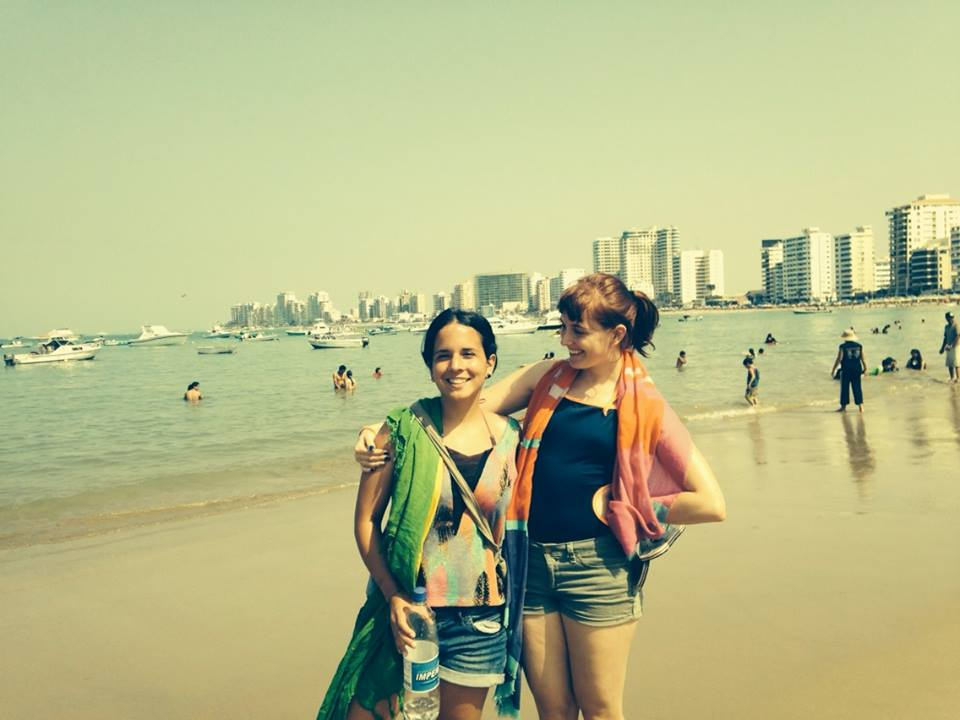
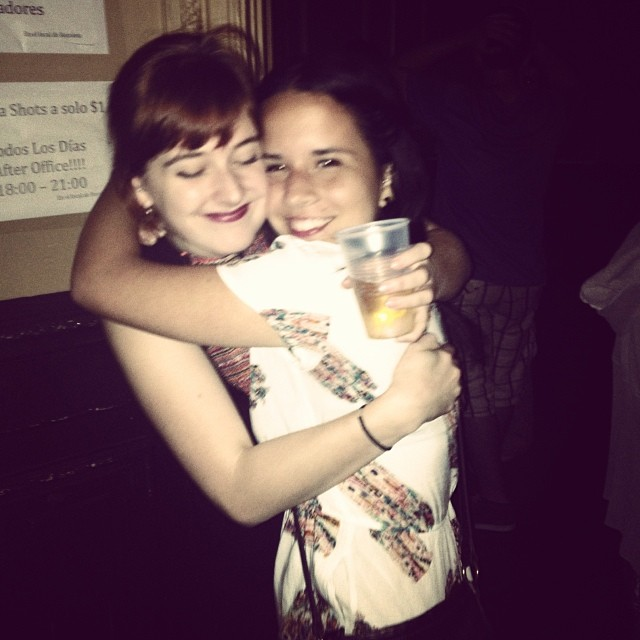

Hard Boiled Eggs
“Michaela, my eggs!” Andrea said. She was referring to the hard-boiled eggs she’d been carrying in her pocket all morning. While boarding the Caltrain, she tripped and the eggs rained to the floor. They began rolling in all directions, down the aisle and under seats of unsuspecting passengers who were also on their way to Palo Alto, California. I leapt into action.
“Excuse me, ma’am,” I started, “Is there an egg under your seat? My friend and I spilled our eggs.”
“What is this, Easter?” the woman said. She smiled and the creases near her eyes gathered above her cheeks. I laughed as she handed me an egg. Interacting with strangers was something I enjoyed. Andrea was less forward with strangers and had developed a different method for retrieving our fallen lunch. She crawled down the aisle on her hands and knees, and with the occasional, “Pardon me,” she’d flatten out and snatch an egg from deep underneath a seat. Eventually, we had our eggs back in our pockets and decided to find seats in a different train car, away from the chaos.
Earlier that morning, we woke up in a cozy inner-city apartment in San Francisco. We woke to an old friend of my dad’s, wringing his hands and apologizing for not having any breakfast cereal. His name was Cary and had recently discovered his gluten allergy –the reason he didn’t keep cereal in the house. Cary motioned toward the kitchen and said we could have anything in the fridge. I said it was alright and went back to sleep but Andrea got out of bed to remedy the situation. I yanked the stolen blankets back from her as she rose, closed my eyes and turned over. She often made sure we ate well and drank enough water when we traveled. She also made sure I didn’t sleep until noon. A few hours later, on our way to catch the train Andrea showed me the contents of her pockets. “Eggs? Is that our lunch?” I asked.
“Yep” she said.
Pilling Fleece Poncho
It was 2011 and I was packing for college. I reached into the pocket of an old fleece poncho and pulled out a used tissue. It wasn’t mine; it was Andrea’s. She was the last one to wear the poncho, six months earlier when she visited me for a full semester during my senior year of high school. I had met her two years before that, sophomore year of high school, during my exchange year in Buenos Aires, Argentina and her family became my unofficial host family. In return, my family happily agreed to host her for a semester. When she came the the United States, she wasn’t technically an exchange student, but my teachers let her shadow me because she’d readily raise her hand and contribute to the class. The used tissue in my poncho was one of many relics I uncovered after she returned to Buenos Aires. She’d been gone for six months, but there was plenty around my house that reminded me of her stay: a missing button on my purse, crumpled receipts under furniture in my room, the pilling fabric of my poncho that was soft and new when Andrea adopted it for her own.
Andrea and I are separated by thousands of miles; I’m in Michigan, she’s in Argentina. Because it’s such an undertaking to visit, our stays last between one and three months. It can feel like a long time. There’s a photograph I keep around my house of the two of us. It was taken when I visited her in South America for a month in 2013. We were traveling together along the coast of Ecuador and in an attempt to take a selfie on the beach we captured instead an awkward photo where it looks like my head is protruding from the side of her head. One body, one head, and an extra head. That’s how it can feel sometimes. If I’m visiting Andrea in South America, I’m the extra head. If she’s visiting me in the United States, she’s the extra head. We’ve had a few conversations about whether it’s worse to have the “growth” protruding from your head for several months, or be the “growth”. The conversation was inconclusive. Running total: negative 12 ounces.
 Salinas, Ecuador, 2013Last time I saw Andrea, she came to visit me. I was waiting at the Minneapolis airport in a line of cars that stretched for miles. I put the car in park, switched on “The Current” radio station and put my feet up on the dashboard, mentally preparing for two full months of Andrea. Any minute now, I thought. I could picture her emerging, long black hair under a silly handmade hat she probably bought at a flea market, wearing ten layers of sweaters and jackets, and carrying nothing but an oversized backpack. She’d shuffle straight through the Minnesota winter to my minivan and probably say “Brrr!” before she said hello. But none of that happened. Two hours passed and every other car left. I began to doubt I was in the right place and the “Arrivals / Baggage Claim” sign was no longer reassuring. I drove from Arrivals Door 4 to Arrivals Door 1, and there she was, inside, sitting on her backpack. She looked like she’d been waiting a long time. I stopped the car and raced out to embrace her. Andrea stood up.
“If you had just driven forward another 100 feet!” Andrea said.
“If you had just stepped outside!” I said back.
“You suck.”
“And you’re the worst,” I said affectionately. By this time we were hugging. Her arms were around my neck and I was holding her a foot off the ground. A year had passed since the last time I saw her in Ecuador and I had forgotten how small she was. When she spoke, her gestures took up a whole room –especially when she has a story to tell. I set her down and admired her disheveled self. She smiled back warmly.
“It feels like yesterday you were in Ecuador with me” she said. I was happy she wasn’t mad about the two-hour wait. Patience was not something Andrea had mastered. When Andrea’s older sister Gia was trying to learn English, Andrea had no time for her mistakes. “It’s not ‘jummy’, it’s ‘yummy.’ You sound like a stupid kid.”
“Andrea, be nice to your sister.” I said, feeling like a mom. “Gia, you’re doing fine. But Andrea’s right, no one will understand you if you say ‘jummy’.” I have arguably too much patience. I grew up with a brother who had special needs and was teaching him basic reasoning by the age of 5. This translated to a high tolerance for people and sometimes Andrea had to bail me out of situations that were going nowhere.
“Michaela, you don’t have to let my aunt show you every pair of earrings in her closet. Especially when she gets into the technicalities of different metals. Just break away.” Andrea said to me once after a painfully long conversation with her aunt Teresa. Andrea and I balance each other out nicely, and I suspect that true reason lies somewhere between our differing perceptions of time. We’ve been on countless trips together and because of her, we never missed a plane, bus or train. Because of me, we’ve been able to deal with the most frustrating of people if need be.
Foot-Long Chili Dog
“Andrea, I think I’m going to vomit.” I said. We were sitting in the back of a taxi, on our way from Montañita to Salinas, Ecuador. Most of the blame, I attribute to the driver’s lead foot; he’d accelerate while swerving between cars and trucks, all for the gain of a second. What really put me over the edge was the third passenger of the taxi (we were in a shared commuter taxi). I had informed everyone in the cab of my nausea but that didn’t stop the third passenger from ordering a foot-long chili dog from the nearest gas station. In middle school, a teacher once told me, “Don’t get your fuel at the same place your car does.” I heed the advice to this day. This man, whose large frame spilled over the edges of his seat, had obviously not been given the same advice. The smell of his chili dog was enough to make anyone queasy. Andrea caught my eyes and saw the pain. Frantically, she began rifling through her backpack. Pills of various colors and sizes, throat lozenges, and small packets of condiments came spilling out of her backpack before she pulled out what she was looking for --a miniature bottle of shampoo. Andrea’s backpack was like Mary Poppins’ purse. It had everything. She popped the cap off the shampoo and held the bottle under my nose so I didn’t have to smell the chili dog. She said, “Pretend it’s not there. There is no chili dog, there is no chili dog…” She patted my back and let me press my face into her shoulder. It brought me back to an old bedtime story my mom would read called “The Little Engine that Could.” A small train makes it to the top of the hill repeating to itself, “I think I can, I think I can…” I held her and the bottle close and we made it unsoiled all the way to Salinas.
L’Oreal Hair Dye
“Michaela, can you help me?” her voice came from the bathroom. What could she possibly need help with in there, I thought. I open the door and found her completely topless with red hair dye all over her face. Where her shirt would have been, she had punched a hole in an empty bulk-toilet-paper bag and was wearing it like a poncho. The crimson L’Oreal hair dye wasn’t just on her face; it was smeared across all surfaces of my bathroom and covering her hands. I spent the next 20 minutes wiping her face clean while she held her hands out to the side like an uncoordinated bird trying not to touch anything.
“Can you scratch my ear too? It itches,” she said.
“You’re ridiculous. Just know I love you,” I said and scratched her ear.
I did my best to get the color off her face, but it had already begun to stain her skin. For the rest of the day, she walked around with a big red smudge on her chin. And now, months later, the red streaks on my shower curtain remind me of her.
Footie Pajamas
“Navi, do you want these footie pajamas?” I said. Navi was a housemate of mine, and one of the smallest people I know. It was easy to picture her in the footie pajamas, which were light blue and covered in small pink owls.
“Those are so cute! Why don’t you want them?” she asked.
“They’re too small” I said and handed them over.
She unfolded them and hugged them to her chest as she walked back to her room. I watched them go and thought of the only night I wore them. The night was New Years Eve, 2014.
“Happy New Year!” Andrea and I heard the muffled chorus through the bathroom door. We were in the alone bathroom. We preferred the bathroom to the rest of the party because at least in the bathroom, we could be alone together. The rest of the party was made up of guests in their mid-twenties who had made no attempt at introductions when Andrea and I arrived. We had never felt more outcast, but our New Years wasn’t ruined. In those first moments of 2015 we were celebrating our seventh year of friendship and had handled situations far more dramatic than being outcastes at a party.
New Years occurred over Christmas break and the two of us were spending it with my parents in Minneapolis where we didn’t know anyone our own age, we were 22 at the time. To be nice, one of my dad’s co-workers, a guy in his mid-twenties, invited us to his New Years party. In theory, the party sounded great. The theme was “Large and in Charge”, and we were told that there would be miniature furniture, miniature beer pong, and everyone was going to wear clothes that were way too small in order to feel larger. Andrea and I showed up in footie pajamas from Target’s little kids section. We cut the feet off up to the knees and ripped the shoulders at the seams so we could fit into the tiny outfits. I was careful when I ripped Andrea’s pajamas; I didn’t want to deform the Despicable Me minion face that stretched across her bright yellow shoulders. We arrived and immediately realized we were the only ones in miniature clothes. No one had adopted the theme, “Large and In Charge” and Andrea and I felt very small and powerless in our tiny clothes. It didn’t take long before we learned that everyone at the party had attended high school together and were more interested in reconnecting than in footie-pajama-wearing strangers.
We milled around the mini beer pong table, and drank from thimble-sized solo cups in an attempt to blend in. We butted our way politely into several circles of people only to realize they were talking about mutual friends we’d never heard of and had no plans of changing the topic. At best, we were tolerated. This is how we ended up in the bathroom alone. When the clock struck midnight, we didn’t have anyone to kiss or any shots to take, so we simply zipped up each other’s footie pajamas and did a little dance.
 Buenos Aires, Argentina, 2013Subaru Outback
“We’re not gonna make it.” I said. Despite time kicking into slow-motion and the adrenaline rush, I said these words very calmly. I thought it might be the last thing I ever said. Andrea and I were holding hands in the back of a Subaru Outback on our way to Michigan’s upper peninsula. Our driver was passing a truck on a two-lane highway in the middle of a snowstorm and I could tell by the oncoming headlights that we weren’t going to make it. We swerved. Our tires dug into the snowdrift on the side of the road and the car spun out of control into more oncoming traffic. One of my hands gripped the door handle with white knuckles, and my other hand gripped Andrea’s. The spinning stopped. I could still feel Andrea’s hand in mine and I knew we were still alive. Her whole body was shaking
Panties
“Michaela, this is just like the movies.” said Andrea. I knew she meant it in the cliché-American-road-trip kind of way. There were five of us in the minivan headed back from a weekend trip to Duluth. Andrea was snuggled in the back seat on Thomas’s lap. Steven and I were sitting in the front seat giggling as we used an app to speed up and slow down Big Parade by The Lumineers. It was like the movies. We were a scene between conflicts, one that passes calmly, unnoticed.
2 hours later, we pulled into the Perkins parking lot somewhere in St. Paul. Steven was a part-time clown and had a gig twisting balloons for families at the Perkins. He leaped out and ran inside.
“Let’s go home,” said Andrea.
“Actually, the blues party starts in an hour,” I said, “we won’t make it if we go home first.”
“No. Let’s go home. It’s been three days since we’ve been home. When we left your house, you said we’d only be gone for one night.” Andrea continued, “Do you realize I’ve been wearing the same pair of underwear for three days?” I hadn’t realized. Andrea’s backpack usually had everything, and I’m accustomed to my pace of life so I always carried extra underwear.
“Oh” I said. I didn’t really know what to say, “Andrea, please, I only get to dance blues when I visit my parents in Minnesota. This party is important to me.”
“Fine” she said.
“Really? You’re sure?” I asked.
“Yes, but we have to stop at Target or Walgreens or something. I need to buy clean underwear. I can’t go another day like this,” she said. Then she added, “Also, know I love you.”